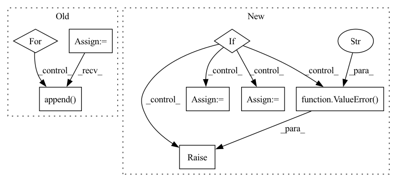

Pattern ID :9554
Before Change
df_list = create_df_list(df)
if local_modeling:
df_train_list = list()
df_val_list = list()
for df in df_list:
df_train, df_val = _split_df(df, n_lags, n_forecasts, valid_p, inputs_overbleed)
df_train_list.append(df_train)
df_val_list.append( df_val)
df_train, df_val = df_train_list, df_val_list
else:
if len(df_list) == 1:
df_train, df_val = _split_df(df_list[0], n_lags, n_forecasts, valid_p, inputs_overbleed)After Change
df_train (pd.DataFrame,dict):training data
df_val (pd.DataFrame,dict): validation data
if isinstance(df, pd.DataFrame):
df_is_dict = False
df_dict = {"__df__": df}
elif isinstance(df, dict):
df_is_dict = True
df_dict = df
else:
raise ValueError("Please insert valid df type (i.e. pd.DataFrame, dict)" )
df_train = {}
df_val = {}
if local_split:
for key in df_dict:In pattern: SUPERPATTERN
Frequency: 3
Non-data size: 8
Instances Fragment ID: 34195913
Project Name: ourownstory/neural_prophet
Commit Name: 6619741f934957dff2a7fa4ff66620772d41471f
Time: 2022-02-14
Author: ourownstory@users.noreply.github.com
File Name: neuralprophet/df_utils.py
M Class Name: AnonimousClass
N Class Name: AnonimousClass
M Method Name: split_df(6)
N Method Name: split_df(6)
M Parent Class:
N Parent Class:
M File Name: neuralprophet/df_utils.py
N File Name: neuralprophet/df_utils.py
M Start Line: 532
M End Line: 548
N Start Line: 573
N End Line: 598
Before Change
df_list = create_df_list(df)
if local_modeling:
df_train_list = list()
df_val_list = list()
for df in df_list:
df_train, df_val = _split_df(df, n_lags, n_forecasts, valid_p, inputs_overbleed)
df_train_list.append(df_train)
df_val_list.append( df_val)
df_train, df_val = df_train_list, df_val_list
else:
if len(df_list) == 1:
df_train, df_val = _split_df(df_list[0], n_lags, n_forecasts, valid_p, inputs_overbleed)After Change
df_train (pd.DataFrame,dict):training data
df_val (pd.DataFrame,dict): validation data
if isinstance(df, pd.DataFrame):
df_is_dict = False
df_dict = {"__df__": df}
elif isinstance(df, dict):
df_is_dict = True
df_dict = df
else:
raise ValueError("Please insert valid df type (i.e. pd.DataFrame, dict)" )
df_train = {}
df_val = {}
if local_split:
for key in df_dict: Fragment ID: 34195914
Project Name: ourownstory/neural_prophet
Commit Name: 6619741f934957dff2a7fa4ff66620772d41471f
Time: 2022-02-14
Author: ourownstory@users.noreply.github.com
File Name: neuralprophet/df_utils.py
M Class Name: AnonimousClass
N Class Name: AnonimousClass
M Method Name: split_df(6)
N Method Name: split_df(6)
M Parent Class:
N Parent Class:
M File Name: neuralprophet/df_utils.py
N File Name: neuralprophet/df_utils.py
M Start Line: 532
M End Line: 548
N Start Line: 573
N End Line: 598
Before Change
def setup_eks_clusters(dlc_images):
terminable_clusters = []
frameworks = {"tensorflow": "tf", "pytorch": "pt", "mxnet": "mx"}
for long_name, short_name in frameworks.items():
if long_name in dlc_images:
cluster_name = None
if not is_pr_context():
num_nodes = 3 if long_name != "pytorch" else 4
cluster_name = f"dlc-{short_name}-cluster-" \
f"{os.getenv("CODEBUILD_RESOLVED_SOURCE_VERSION")}-{random.randint(1, 10000)}"
eks_utils.create_eks_cluster(cluster_name, "gpu", num_nodes, "p3.16xlarge", "pytest.pem")
terminable_clusters.append( cluster_name)
eks_utils.eks_setup(long_name, cluster_name)
return terminable_clusters
After Change
def setup_eks_clusters(dlc_images):
frameworks = {"tensorflow": "tf", "pytorch": "pt", "mxnet": "mx"}
frameworks_in_images = [framework for framework in frameworks.keys() if framework in dlc_images]
if len(frameworks_in_images) != 1:
raise ValueError(
f"All images in dlc_images must be of a single framework for EKS tests.\n"
f"Instead seeing {frameworks_in_images} frameworks."
)
long_name = frameworks_in_images[0]
short_name = frameworks[long_name]
num_nodes = 2 if is_pr_context() else 3 if long_name != "pytorch" else 4
cluster_name = f"dlc-{short_name}-cluster-" \
f"{os.getenv("CODEBUILD_RESOLVED_SOURCE_VERSION")}-{random.randint(1, 10000)}" Fragment ID: 34195918
Project Name: aws/deep-learning-containers
Commit Name: 1207ce7fb60430e234c1c64ecc8d7496be0ec6e2
Time: 2020-05-29
Author: 54188298+saimidu@users.noreply.github.com
File Name: test/testrunner.py
M Class Name: AnonimousClass
N Class Name: AnonimousClass
M Method Name: setup_eks_clusters(1)
N Method Name: setup_eks_clusters(1)
M Parent Class:
N Parent Class:
M File Name: test/testrunner.py
N File Name: test/testrunner.py
M Start Line: 124
M End Line: 136
N Start Line: 124
N End Line: 138
Before Change
pd.DataFrame or list of pd.DataFrame
df_list = create_df_list(df)
checked_df = list()
for df in df_list:
checked_df.append( _check_dataframe(df, check_y, covariates, regressors, events))
df = checked_df
return df[0] if len(df) == 1 else df
After Change
if isinstance(df, pd.DataFrame):
checked_df = check_single_dataframe(df, check_y, covariates, regressors, events)
elif = {}
for key, df_i in df.items():
checked_df[key] = check_single_dataframe(df_i, check_y, covariates, regressors, events)
else:
raise ValueError("Please insert valid df type (i.e. pd.DataFrame, dict)" )
return checked_df
def crossvalidation_split_df(df, n_lags, n_forecasts, k, fold_pct, fold_overlap_pct=0.0): Fragment ID: 34195911
Project Name: ourownstory/neural_prophet
Commit Name: 6619741f934957dff2a7fa4ff66620772d41471f
Time: 2022-02-14
Author: ourownstory@users.noreply.github.com
File Name: neuralprophet/df_utils.py
M Class Name: AnonimousClass
N Class Name: AnonimousClass
M Method Name: check_dataframe(5)
N Method Name: check_dataframe(5)
M Parent Class:
N Parent Class:
M File Name: neuralprophet/df_utils.py
N File Name: neuralprophet/df_utils.py
M Start Line: 383
M End Line: 388
N Start Line: 394
N End Line: 402